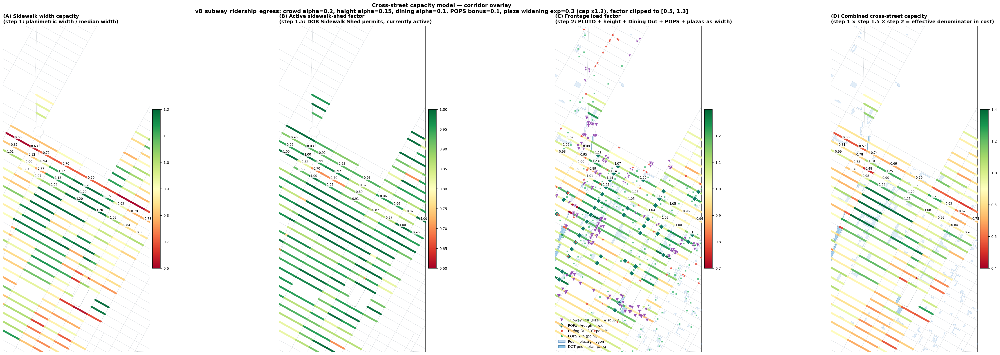
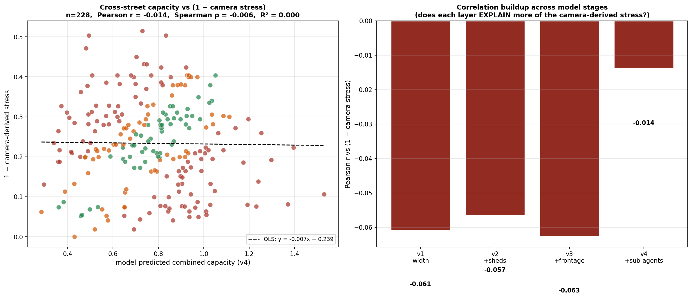
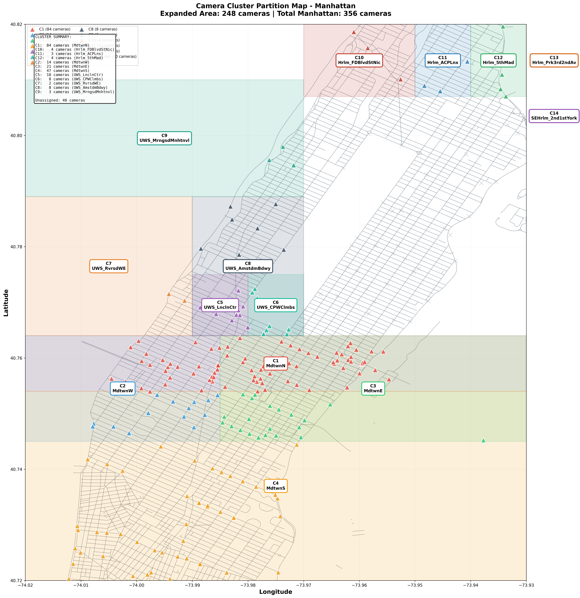
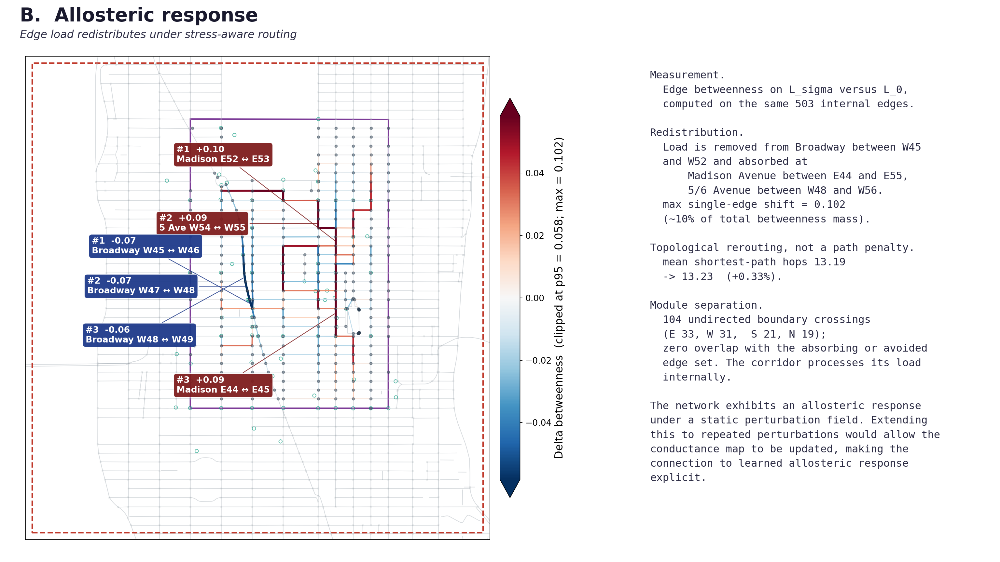

Canonical March and April Report Figures

Shortest vs. Stress-Aware Routing
Comparison showing 22% stress reduction on Grand Central to Carnegie Hall route under equal hop count.

Cross-Street Capacity Overlay
Second-order cross-street capacity derived from 25 public NYC Open Data sources across Midtown Manhattan.

Time-Varying Capacity Field
Diurnal capacity variations accounting for subway egress plus outdoor dining plus scaffolding closures.

Supply vs. Demand Orthogonality
Scatter plot proving independence between camera stress and edge capacity (Pearson r = -0.014).

Lived-Knowledge Audit Reference Blocks
Twelve reference blocks evaluated against qualitative local observations with zero misalignments.

Full Island Camera Corridor Partition
Spatial partition mapping camera sensors across Manhattan street corridors.

Corridor Laplacian Eigenvectors
Spectral analysis of the corridor graph operator showing low-frequency Fiedler modes.

Allosteric Soft-Mode Redistribution
Flow redistribution under perturbation with zero leakage across corridor boundaries.

Destination Grid (AM Peak)
Multi-destination route comparison during morning rush hour commuter flow.